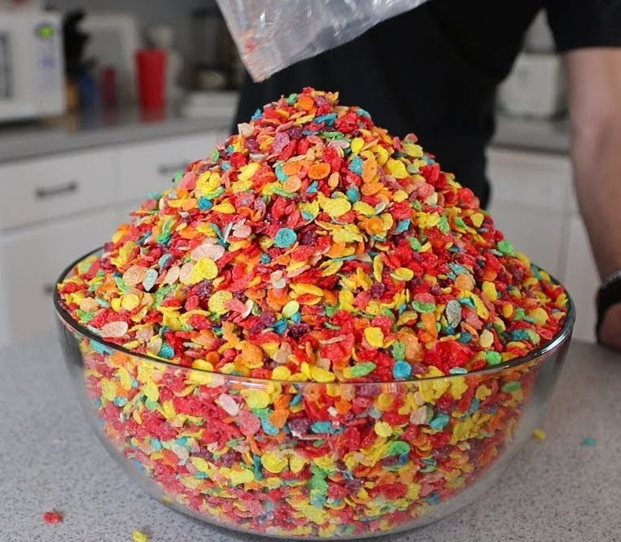

Large Bowl of Cereal

Description
Minimum effort, most satisfiying meal of the bunch. Nothing like a bowl of artifical sugars and dairy to enjoy after a long hard working depression episode. Oatmeals are too much effort anyway.
Ingredients
- A brand of cereal of your choice
- Any amount of milk or milk substitute of your choice
- 1 LARGE bowl
- Optional:A comically large spoon
Instructions
- Take your LARGE bowl.
- Grab your cereal of choice and pour out to your hearts content.
- Do the same with the milk of your choice. Be careful not to pour too much to overflow the bowl.
Return to main page